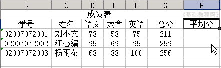
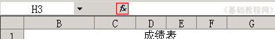
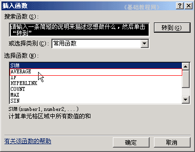
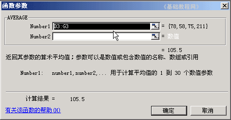
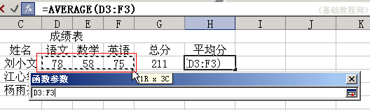
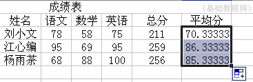
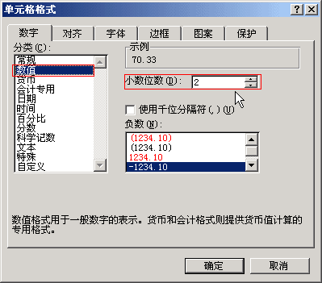
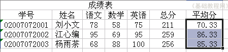

Excel 基础入门教程
求平均值 返回
上一节我们学习了手工输入公式的方法，对于比较复杂的运算，我们可以用函数来完成，下面我们来看一个练习；
1、启动Excel
1）点击“开始－所有程序－Microsoft－Microsoft Office Excel 2003”；
2）出现一个满是格子的空白窗口，这就是一张电子表格了，第一个格子看着边框要粗一些，处于选中状态；

2、输入公式
1）点菜单“文件－打开”命令，打开上次的“成绩表”文件；
2）在总分的旁边输入“平均分”，然后把格式设置好；

3）选中下面的单元格，在上边的编辑栏上，找到编辑框左边的“fx”，点一下；

4）在出来的“插入函数”面板中，找到AVERAGE点一下选中，然后点下面的“确定”，这个是平均值函数；
 
5）接下来出来的是，数据的区域，在表格中框选中从“78”到“75”的三个单元格，对三门成绩进行平均分；

6）检查一下数据区域框正确后，点击“确定”，然后单元格中就出现了平均分，
拖动填充手柄，把下面两个单元格也输入平均值函数；

7）瞄准蓝紫色敲右键，选“设置单元格格式”，把“数字－数值”里的小数点设为2；

点“确定”后，完成数据输入，保存一下文件；

本节学习了Excel中的平均值函数，如果你成功地完成了练习，请继续学习下一课内容；
本教程由86团学校TeliuTe制作|著作权所有
基础教程网：http://teliute.org/
美丽的校园……
转载和引用本站内容，请保留版权信息和本站链接。